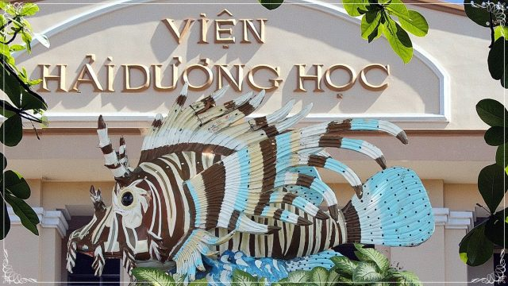
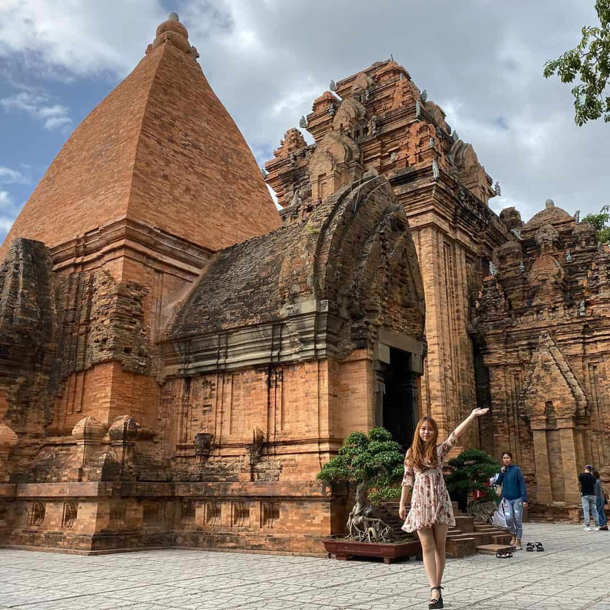
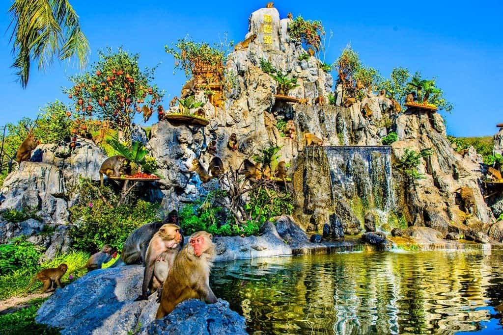
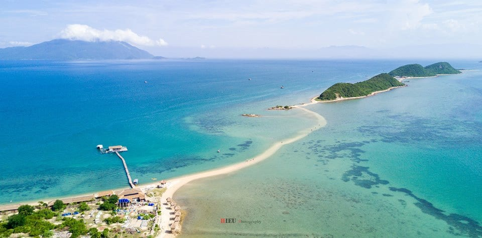

Những địa điểm du lịch Nha Trang đẹp và hấp dẫn bậc nhất
Các địa điểm du lịch trong thành phố Nha Trang
Vinpearl Land
Địa chỉ: 98B/13, Trần Phú, Lộc Thọ, Thành phố Nha Trang, Khánh Hòa
Toạ lạc trên đảo Hòn Tre xinh đẹp giữa biển khơi và bãi biển trong xanh quanh năm, Vinpearl Land được biết đến như điểm đến du lịch Nha Trang - “thiên đường của miền nhiệt đới” hấp dẫn mọi du khách.

Boutik Cham NhaTrang Hotel
Giá từ 720.000 VND mỗi đêm
Crown Nguyen Hoang Hotel
Giá từ 864.000 VND mỗi đêm
Regalia Nha Trang
Giá từ 1.395.000 VND mỗi đêm
Ocean Front Villas Nha Trang
Giá từ 10.800.000 VND mỗi đêm
Ngoài các khu vui chơi dành cho gia đình và trẻ em, Vinpearl Land còn có Công viên nước Vinpearl. Với các đường trượt có độ dốc lớn nhất là 21.5m, khu vực giải trí này thường phục vụ những du khách ưa thích cảm giác mạnh. Trong đó, một đoạn Hang Rùng Rợn dài 56m cũng sẽ làm thoả mãn niềm đam mê thám hiểm của nhiều du khách trẻ tuổi. Hơn nữa, nơi này còn thu hút du khách bởi rạp chiếu phim 4D hoành tráng.
Bên cạnh những phương tiện đi lại thông thường như ca nô, taxi, tàu cao tốc và phà, khách tham quan còn có thể sang đảo Hòn tre bằng hệ thống cáp treo dài 3.320m. Đây là cáp treo dài nhất thế giới với 9 cột trụ trên biển và đất liền. Tuyến cáp có cấu trúc giống tháp Eiffel, đặc biệt vào ban đêm sẽ được thắp sáng bằng laser. Hệ thống cáp này có thể chuyên chở 1000 - 1.500 người/giờ. Nhờ đó, việc qua lại giữa đảo và đất liền được dễ dàng hơn.
Viện Hải dương học
Địa chỉ: số 1, Cầu Đá, Trần Phú, thành phố Nha Trang, tỉnh Khánh Hòa.
Viện Hải dương học Nha Trang là nơi nghiên cứu đời sống các loài động thực vật biển tại thành phố Nha Trang tỉnh Khánh Hòa.Viện này được thành lập vào năm 1923 có địa chỉ tại số 1 Cầu Đá, cách trung tâm thành phố Nha Trang khoảng 6km về phía Đông Nam.
AQUA Seaview Hotel
Giá từ 344.000 VND mỗi đêm
Lucina Villa Nha Trang
Giá từ 13.167.000 VND mỗi đêm

Mermaid Villas Nha Trang
Giá từ 9.000.000 VND mỗi đêm
Star city condo tel
Giá từ 1.400.000 VND mỗi đêm
Địa điểm du lịch này có trên 20.000 mẫu vật của 4.000 loại sinh vật biển được lưu giữ, sưu tầm và nuôi dưỡng trong nhiều năm. Đặc biệt, đây còn là nơi trưng bày một bộ xương cá voi khổng lồ có chiều dài gần 26m, cao 3m với 48 đốt sống đã được phục chế rất đầy đủ. Du khách đến đây sẽ được tham quan khu thí nghiệm, ngắm các sinh vật lạ và biết thêm nhiều điều về cuộc sống của các loài sinh vật ở biển.
Tháp bà Ponagar
Địa chỉ: Đường Hai Tháng Tư, Vĩnh Phước, Thành phố Nha Trang, Khánh Hòa
Nha Trang không chỉ hấp dẫn với những bãi biển đẹp đến mê hồn người mà còn gây ấn tượng bởi những công trình kiến trúc độc đáo và đẹp mắt. Tháp bà Ponagar là một trong những quần thể kiến trúc văn hóa Chăm Pa lớn nhất ở miền Trung Việt Nam.
Olwen Hotel 2
Giá từ 444.000 VND mỗi đêm
La Sera Hotel
Giá từ 900.000 VND mỗi đêm
Volga Nha Trang Hotel
Giá từ 245.000 VND mỗi đêm
Apus Hotel
Giá từ 320.000 VND mỗi đêm
Tọa lạc trên một ngọn đồi cao 50m so với mực nước biển, Tháp Bà Ponagar được bao trùm bởi màu xanh của cây rừng, như một công trình nổi bật giữa khung nền thiên nhiên xanh mát. Tổng thể kiến trúc tháp bà Ponagar gồm có 3 tầng: tầng thấp là ngôi tháp cổ mà nay đã không còn nữa. Ở tầng giữa là nhà khách được gọi là Mandapa, dành cho những vị khách có thể nghỉ chân sau chuyến hành hương, gồm 4 hàng cột hình bát giác tạo nên một tổng thể kiến trúc vô cùng lạ mắt.
Tầng trên cùng là nơi cư ngụ của những tòa tháp.Điểm đặc biệt trong cấu trúc của các tòa tháp đó là những viên gạch được xếp rất khít và gần như là không nhìn thấy những vết kết dính giữa các viên gạch. Tòa tháp có 4 tầng, mỗi tầng đều có cửa. Bên trong là tượng nữ thần tạc bằng đá hoa cương ngồi trên đài sen tỏa ra một dáng vẻ uy nghi và tôn kính đến lạ thường.
Vịnh Vân Phong
Whale Island Resort
Giá từ 3.000.000 VND mỗi đêm
The Light Coral Island Resort
Giá từ 2.200.000 VND mỗi đêm
SANTORINI HOME RESORT
Giá từ 3.000.000 VND mỗi đêm
Homestay Bac Van Phong
Giá từ 400.000 VND mỗi đêm
Nằm cách khá xa trung tâm thành phố (khoảng 40km về phía Bắc) nên Vịnh Vân Phong sở hữu cho mình một vẻ đẹp vô cùng hoang sơ, mộc mạc, bình yên đến lạ. Vẫn là bãi biển xanh trong đến lay động lòng người kia, nhưng Vân Phong không mang cái vẻ ồn ào, đông đúc của thành phố mà lặng yên hơn, trầm mặc hơn, bí ẩn hơn đợi người ta khám phá.
Đảo Khỉ Nha Trang
Nha Trang gây ấn tượng với du khách với nhiều địa điểm du lịch thú vị và độc đáo, trong đó có Đảo Khỉ Nha Trang. Đảo Khỉ là một địa điểm du lịch Nha Trang nằm ngay trên đảo Hòn Lao thuộc vịnh Nha Phu, cách trung tâm thành phố Nha Trang khoảng 18km theo hướng Bắc. Nơi đây là hòn đảo duy nhất ở Việt Nam có tới hàng ngàn con khỉ sinh sống và phát triển tự nhiên.
The Trang Villas
Giá từ 2.000.000 VND mỗi đêm

Arise Seaside Hotel
Giá từ 900.000 VND mỗi đêm
Comfortzone
Giá từ 900.000 VND mỗi đêm
L'Alya Ninh Van Bay
Giá từ 8.000.000 VND mỗi đêm
Hiện nay, Đảo Khỉ được biết đến như là công viên du lịch sinh thái đặc biệt ở Nha Trang với hai loài khỉ được thuần hóa và sinh sống tự nhiên. Khi du khách tới tham quan có thể thoải mái chơi đùa cùng các chú khỉ tinh nghịch, chúng sẽ rất thân thiện và pha trò đùa nghịch cùng con người.
Bên cạnh việc tham quan, chơi đùa với đàn khỉ, Đảo Khỉ còn hấp dẫn du khách với phong cảnh thiên nhiên hữu tình, hoang sơ và cuộc sống bình dị của cư dân trên đảo. Du khách còn thể tham gia nhiều hoạt động khác như đi xe ngựa xung quanh đảo, tham gia các trò chơi, dịch vụ hấp dẫn khác như lặn biển ngắm san hô, chơi kéo dù, đi motor nước (jestki), lượn dù bay, chèo thuyền kayak.
Đảo Điệp Sơn
Nằm trong Vịnh Ninh Vân xinh đẹp, đảo Điệp Sơn đẹp nổi bật như một dấu ấn riêng của Nha Trang. Hòn đảo hoang sơ là nơi còn lưu giữ dãy núi nguyên sinh Điệp Sơn, chính vì thế đảo cũng được gọi theo tên Điệp Sơn. Trong khi thực tế đào là một cụm gồm 3 đảo nhỏ: Hòn Bịp, Hòn Giữa và Hòn Đuốc được nối với nhau bằng con đường cát độc đáo dài hơn 800m nhưng rộng chưa tới 1m. Chính con đường này đã làm nên sức hút riêng có của địa điểm du lịch Nha Trang kỳ thú này.
Amiana Resort Nha Trang
Giá từ 2.440.000 VND mỗi đêm
InterContinental Nha Trang
Giá từ 3.900.000 VND mỗi đêm
Vinpearl Sealink Nha Trang
Giá từ 2.2770.000 VND mỗi đêm
Vinpearl Luxury Nha Trang
Giá từ 4.930.000 VND mỗi đêm
Nằm trong Vịnh Ninh Vân xinh đẹp, đảo Điệp Sơn đẹp nổi bật như một dấu ấn riêng của Nha Trang. Hòn đảo hoang sơ là nơi còn lưu giữ dãy núi nguyên sinh Điệp Sơn, chính vì thế đảo cũng được gọi theo tên Điệp Sơn. Trong khi thực tế đào là một cụm gồm 3 đảo nhỏ: Hòn Bịp, Hòn Giữa và Hòn Đuốc được nối với nhau bằng con đường cát độc đáo dài hơn 800m nhưng rộng chưa tới 1m. Chính con đường này đã làm nên sức hút riêng có của địa điểm du lịch Nha Trang kỳ thú này.